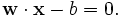

Support vector machine
From Wikipedia, the free encyclopedia
Support vector machines (SVMs) are a set of related supervised learning methods used for classification and regression. They belong to a family of generalized linear classifiers. They can also be considered a special case of Tikhonov regularization. A special property of SVMs is that they simultaneously minimize the empirical classification error and maximize the geometric margin; hence they are also known as maximum margin classifiers.
Support vector machines map input vectors to a higher dimensional space where a maximal separating hyperplane is constructed. Two parallel hyperplanes are constructed on each side of the hyperplane that separates the data. The separating hyperplane is the hyperplane that maximizes the distance between the two parallel hyperplanes. An assumption is made that the larger the margin or distance between these parallel hyperplanes the better the generalisation error of the classifier will be. An excellent tutorial has been produced by C.J.C Burges [1]. A comparison of the SVM to other classifiers has been made by van der Walt and Barnard [2].
Contents |
[edit] Motivation
Often we are interested in classifying data as a part of a machine-learning process. Each data point will be represented by a p-dimensional vector (a list of p numbers). Each of these data points belongs to only one of two classes. We are interested in whether we can separate them with an "p minus 1" dimensional hyperplane. This is a typical form of linear classifier. There are many linear classifiers that might satisfy this property. However, we are additionally interested in finding out if we can achieve maximum separation (margin) between the two classes. By this we mean that we pick the hyperplane so that the distance from the hyperplane to the nearest data point is maximized. That is to say that the nearest distance between a point in one separated hyperplane and a point in the other separated hyperplane is maximized. Now, if such a hyperplane exists, it is clearly of interest and is known as the maximum-margin hyperplane and such a linear classifier is known as a maximum margin classifier.
[edit] Formalization
We consider data points of the form:
where the ci is either 1 or −1, a constant denoting the class to which the point belongs. Each is a p-dimensional real vector, usually of normalised (Normalizing constant) [0,1] or [-1,1] values. The scaling is important to guard against variables (attributes) with larger variance that might otherwise dominate the classification. We can view this as training data, which denotes the correct classification which we would like the SVM to eventually distinguish, by means of the dividing (or separating) hyperplane, which takes the form
- 
The vector points perpendicular to the separating hyperplane. Adding the offset parameter b allows us to increase the margin. In its absence, the hyperplane is forced to pass through the origin, restricting the solution.
As we are interested in the maximum margin, we are interested in the support vectors and the parallel hyperplanes (to the optimal hyperplane) closest to these support vectors in either class. It can be shown that these parallel hyperplanes can be described by equations (by scaling w and b if not)
If the training data are linearly separable, we can select these hyperplanes so that there are no points between them and then try to maximize their distance. By using geometry, we find the distance between the hyperplanes is 2/|w|, so we want to minimize |w|. To exclude data points, we need to ensure that for all i either
This can be rewritten as:
[edit] Primal Form
The problem now is to minimize |w| subject to the constraint (1). This is a quadratic programming (QP) optimization problem. More clearly,
- minimize , subject to .
The factor of 1/2 is used for mathematical convenience.
[edit] Dual Form
Writing the classification rule in its dual form reveals that classification is only a function of the support vectors, i.e., the training data that lie on the margin. The dual of the SVM can be shown to be:
- subject to ,
where the α terms constitute a dual representation for the weight vector in terms of the training set:
[edit] Soft margin
In 1995, Corinna Cortes and Vladimir Vapnik suggested a modified maximum margin idea that allows for mislabeled examples [3]. If there exists no hyperplane that can split the "yes" and "no" examples, the Soft Margin method will choose a hyperplane that splits the examples as cleanly as possible, while still maximizing the distance to the nearest cleanly split examples. This work popularized the expression Support Vector Machine or SVM. The method introduces slack variables, ξi, which measure the degree of misclassification of the datum xi
- .
The objective function is then increased by a function which penalises non-zero ξi, and the optimisation becomes a trade off between a large margin, and a small error penalty. If the penalty function is linear, the equation (3) now transforms to
This constraint in (2) along with the objective of minimizing |w| can be solved using Lagrange multipliers. The key advantage of a linear penalty function is that the slack variables vanish from the dual problem, with the constant C appearing only as an additional constraint on the Lagrange multipliers. Non-linear penalty functions have been used, particularly to reduce the effect of outliers on the classifier, but unless care is taken, the problem becomes non-convex, and thus it is considerably more difficult to find a global solution.
[edit] Non-linear classification
The original optimal hyperplane algorithm proposed by Vladimir Vapnik in 1963 was a linear classifier. However, in 1992, Bernhard Boser, Isabelle Guyon and Vapnik suggested a way to create non-linear classifiers by applying the kernel trick (originally proposed by Aizerman et al..[4] ) to maximum-margin hyperplanes[5]. The resulting algorithm is formally similar, except that every dot product is replaced by a non-linear kernel function. This allows the algorithm to fit the maximum-margin hyperplane in the transformed feature space. The transformation may be non-linear and the transformed space high dimensional; thus though the classifier is a hyperplane in the high-dimensional feature space it may be non-linear in the original input space.
If the kernel used is a Gaussian radial basis function, the corresponding feature space is a Hilbert space of infinite dimension. Maximum margin classifiers are well regularized, so the infinite dimension does not spoil the results. Some common kernels include,
- Polynomial (homogeneous):
- Polynomial (inhomogeneous):
- Radial Basis Function: , for γ > 0
- Gaussian Radial basis function:
- Sigmoid: , for some (not every) κ > 0 and c < 0
[edit] Regression
A version of a SVM for regression was proposed in 1996 by Vladimir Vapnik, Harris Drucker, Chris Burges, Linda Kaufman and Alex Smola[6]. This method is called support vector regression (SVR). The model produced by support vector classification (as described above) only depends on a subset of the training data, because the cost function for building the model does not care about training points that lie beyond the margin. Analogously, the model produced by SVR only depends on a subset of the training data, because the cost function for building the model ignores any training data that are close (within a threshold ε) to the model prediction.
[edit] Implementation
The parameters of the maximum-margin hyperplane are derived by solving the optimization. There exist several specialized algorithms for quickly solving the QP problem that arises from SVMs, mostly reliant on heuristics for breaking the problem down into smaller, more-manageable chunks. A common method for solving the QP problem is Platt's SMO algorithm, which breaks the problem down into 2-dimensional sub-problems that may be solved analytically, eliminating the need for a numerical optimization algorithm such as conjugate gradient methods.
[edit] Fast Training Algorithms
There has been some recent work by Thorsten Joachims that won the best paper award in KDD 2006, which gives a cutting plane algorithm for training Support Vector Machines.
It is the first algorithm that optimizes the traditional hinge-loss SVM formulation in time that is linear in the size of the training data (where training data is represented in the Sparse Format with zero valued attributes not included). This is available in SVMPerf, which is a freely downloadable off-the-shelf package.
[edit] See also
- Predictive analytics
- Relevance Vector Machine, a probabilistic sparse kernel model identical in functional form to SVM.
[edit] References
- ^ Christopher J. C. Burges. "A Tutorial on Support Vector Machines for Pattern Recognition". Data Mining and Knowledge Discovery 2:121 - 167, 1998 http://research.microsoft.com/~cburges/papers/SVMTutorial.pdf
- ^ (C.M. van der Walt and E. Barnard,“Data characteristics that determine classifier performance”, Proc., Sixteenth Annual Symposium of the Pattern Recognition Association of South Africa, pp.160-165, 2006.) http://www.meraka.org.za/pubs/CvdWalt.pdf
- ^ Corinna Cortes and V. Vapnik, "Support-Vector Networks, Machine Learning, 20, 1995. http://www.springerlink.com/content/k238jx04hm87j80g/
- ^ M. Aizerman, E. Braverman, and L. Rozonoer (1964). "Theoretical foundations of the potential function method in pattern recognition learning". Automation and Remote Control 25: 821-837.
- ^ B. E. Boser, I. M. Guyon, and V. N. Vapnik. A training algorithm for optimal margin classifiers. In D. Haussler, editor, 5th Annual ACM Workshop on COLT, pages 144-152, Pittsburgh, PA, 1992. ACM Press
- ^ Harris Drucker, Chris J.C. Burges, Linda Kaufman, Alex Smola and Vladimir Vapnik (1997). "Support Vector Regression Machines". Advances in Neural Information Processing Systems 9, NIPS 1996, 155-161, MIT Press.
[edit] Bibliography
- Nello Cristianini and John Shawe-Taylor. An Introduction to Support Vector Machines and other kernel-based learning methods. Cambridge University Press, 2000. ISBN 0-521-78019-5 ([1] SVM Book)
- Huang T.-M., Kecman V., Kopriva I. (2006), Kernel Based Algorithms for Mining Huge Data Sets, Supervised, Semi-supervised, and Unsupervised Learning, Springer-Verlag, Berlin, Heidelberg, 260 pp. 96 illus., Hardcover, ISBN 3-540-31681-7[2]
- Vojislav Kecman: "Learning and Soft Computing - Support Vector Machines, Neural Networks, Fuzzy Logic Systems", The MIT Press, Cambridge, MA, 2001.[3]
- Bernhard Schölkopf and A. J. Smola: Learning with Kernels. MIT Press, Cambridge, MA, 2002. (Partly available on line: [4].) ISBN 0-262-19475-9
- Bernhard Schölkopf, Christopher J.C. Burges, and Alexander J. Smola (editors). "Advances in Kernel Methods: Support Vector Learning". MIT Press, Cambridge, MA, 1999. ISBN 0-262-19416-3. [5]
- John Shawe-Taylor and Nello Cristianini. Kernel Methods for Pattern Analysis. Cambridge University Press, 2004. ISBN 0-521-81397-2 ([6] Kernel Methods Book)
- P.J. Tan and D.L. Dowe (2004), MML Inference of Oblique Decision Trees, Lecture Notes in Artificial Intelligence (LNAI) 3339, Springer-Verlag, pp1082-1088. (This paper uses minimum message length (MML) and actually incorporates probabilistic support vector machines in the leaves of decision trees.)
- Vladimir Vapnik. The Nature of Statistical Learning Theory. Springer-Verlag, 1995. ISBN 0-387-98780-0
- Vladimir Vapnik, S.Kotz "Estimation of Dependences Based on Empirical Data" Springer, 2006. ISBN: 0387308652, 510 pages [this is a reprint of Vapnik's early book describing philosophy behind SVM approach. The 2006 Appendix describes recent development].
- Dmitriy Fradkin and Ilya Muchnik "Support Vector Machines for Classification" in J. Abello and G. Carmode (Eds) "Discrete Methods in Epidemiology", DIMACS Series in Discrete Mathematics and Theoretical Computer Science, volume 70, pp. 13-20, 2006. [7]. Succinctly describes theoretical ideas behind SVM.
- Kristin P. Bennett and Colin Campbell, "Support Vector Machines: Hype or Hallelujah?", SIGKDD Explorations, 2,2, 2000, 1-13. [8]. Excellent introduction to SVMs with helpful figures.
- Ovidiu Ivanciuc, "Applications of Support Vector Machines in Chemistry", In: Reviews in Computational Chemistry, Volume 23, 2007, pp. 291–400. Reprint available: [9]
[edit] External links
[edit] General
- www.pascal-network.org (EU Funded Network on Pattern Analysis, Statistical Modelling and Computational Learning)
- www.kernel-machines.org (general information and collection of research papers)
- www.kernel-methods.net (News, Links, Code related to Kernel methods - Academic Site)
- www.support-vector.net (News, Links, Code related to Support Vector Machines - Academic Site)
- www.support-vector-machines.org (Literature, Review, Software, Links related to Support Vector Machines - Academic Site)
- www.support-vector.ws (Free educational MATLAB based software for SVMs, NN and FL , Links, Publications downloads, Semisupervised learning software SemiL, Links)
[edit] Software
- The Kernel-Machine Library (GNU) C++ template library for Support Vector Machines
- Lush -- a Lisp-like interpreted/compiled language with C/C++/Fortran interfaces that has packages to interface to a number of different SVM implementations. Interfaces to LASVM, LIBSVM, mySVM, SVQP, SVQP2 (SVQP3 in future) are available. Leverage these against Lush's other interfaces to machine learning, hidden markov models, numerical libraries (LAPACK, BLAS, GSL), and builtin vector/matrix/tensor engine.
- SVMlight -- a popular implementation of the SVM algorithm by Thorsten Joachims; it can be used to solve classification, regression and ranking problems.
- SVMProt -- Protein Functional Family Prediction.
- LIBSVM -- A Library for Support Vector Machines, Chih-Chung Chang and Chih-Jen Lin
- YALE -- a powerful machine learning toolbox containing wrappers for SVMLight, LibSVM, and MySVM in addition to many evaluation and preprocessing methods.
- LS-SVMLab - Matlab/C SVM toolbox - well-documented, many features
- Gist -- implementation of the SVM algorithm with feature selection.
- Weka -- a machine learning toolkit that includes an implementation of an SVM classifier; Weka can be used both interactively though a graphical interface or as a software library. (The SVM implementation is called "SMO". It can be found in the Weka Explorer GUI, under the "functions" category.)
- OSU SVM - Matlab implementation based on LIBSVM
- Torch - C++ machine learning library with SVM
- Shogun - Large Scale Machine Learning Toolbox that provides several SVM implementations (like libSVM, SVMlight) under a common framework and interfaces to Octave, Matlab, Python, R
- Spider - Machine learning library for Matlab
- kernlab - Kernel-based Machine Learning library for R
- e1071 - Machine learning library for R
- SimpleSVM - SimpleSVM toolbox for Matlab
- Statistical Pattern Recognition Toolbox for Matlab.
- SVM and Kernel Methods Matlab Toolbox
- PCP -- C program for supervised pattern classification. Includes LIBSVM wrapper.
- TinySVM -- a small SVM implementation, written in C++
- pcSVM is an object oriented SVM framework written in C++ and provides wrapping to Python classes. The site provides a stand alone demo tool for experimenting with SVMs.
- PyML -- a Python machine learning package. Includes: SVM, nearest neighbor classifiers, ridge regression, Multi-class methods (one-against-one and one-against-rest), Feature selection (filter methods, RFE, multiplicative update, Model selection, Classifier testing (cross-validation, error rates, ROC curves, statistical test for comparing classifiers).
- Algorithm::SVM -- Perl bindings for the libsvm Support Vector Machine library
- SVM Classification Applet -- Performs classification on any given data set and gives 10-fold cross-validation error rate
[edit] Interactive SVM applications
- ECLAT classification of Expressed Sequence Tag (EST) from mixed EST pools using codon usage
- EST3 classification of Expressed Sequence Tag (EST) from mixed EST pools using nucleotide triples
- Interactive SVM Applet Illustrates interactively how the SVM finds decision boundaries on any artificial data set


{kind=link}
{kind=link}
{kind=link}